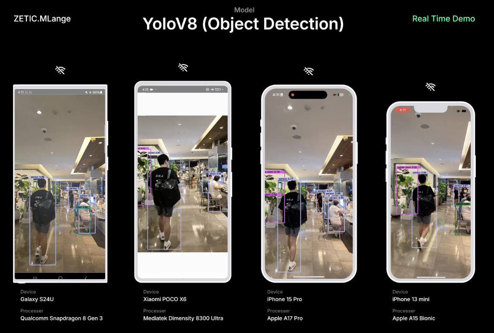

Object Detection (YOLOv8 / YOLOv11)#

On-device AI Object Detection App with ZETIC.MLange (YOLOv11)
GitHub repository#
We provide YOLOv11 demo application source code for both Android and iOS applications for the YOLOv8 demo. If input model key is changed to YOLOv8, you can experience YOLOv8 also. repository
What is YOLOv11#
The YOLOv11 is the latest version of the acclaimed real-time object detection and image segmentation model.
YOLOv11 document page by Ultralytics: link
Currently, we only support detector mode. We’ll support other features for the YOLOv11 model later.
Step-by-step implementation#
0. Prerequisites#
We prepared the model key for the model for you. You can skip to step
2if you want.
Prepare the YOLO11 model and input sample#
Export YOLO11 model
You will get
yolo11n.onnxmodel after the following script
from ultralytics import YOLO import torch # Load a YOLOv11 model model = YOLO("yolo11n.pt") # Export the model model.export(format="onnx", opset=12, simplify=True, dynamic=False, imgsz=640)
Prepare input sample as NumPy array
You can use the default sample input that we prepared: link
Default input size for
yolo11nmodelOr prepare input from your image file with the below function
preprocess_image(...)
import cv2 import numpy as np def preprocess_image(image_path, target_size=(640, 640)): img = cv2.imread(image_path) img = cv2.cvtColor(img, cv2.COLOR_BGR2RGB) img = cv2.resize(img, target_size) img = img.astype(np.float32) / 255.0 img = np.transpose(img, (2, 0, 1)) img = np.expand_dims(img, axis=0) return img
1. Generate ZETIC.MLange model key#
Get your own MLange model key from the model
If you want to get your own model key, please get your own model key as below.
# (1) Get mlange_gen $ wget https://github.com/zetic-ai/ZETIC_MLange_document/raw/main/bin/mlange_gen && chmod 755 mlange_gen # (2) Run mlange_gen $ ./mlange_gen -m yolo11n.onnx -i images.npy # Expected output # ... # MLange Model Key : {YOUR_YOLOV8_MODEL_KEY} # ...
2. Implement ZeticMLangeModel with your model key#
We prepared a model key for the demo app:
yolo-v11n-test. You can use the model key to try the Zetic.MLange Application.Android app
For the detailed application setup, please follow
deploy to Android StudiopageZETIC.MLange usage in
JavaDemo app is written in
Java, but you can useKotlinas well.
ZeticMLangeModel model = new ZeticMLangeModel(this, "YOUR_YOLOV11_MODEL_KEY"); model.run(inputs); ByteBuffer[] outputs = model.getOutputBuffers();
iOS app
For the detailed application setup, please follow
deploy to XCodepageZETIC.MLange usage in Swift
let model = ZeticMLangeModel(mlange_model_key) model.run(yoloModelInput); let outputs = model.getOutputDataArray()
3. Prepare YOLOv8 image feature extractor for Android and iOS#
We provide a YOLOv8 feature extractor as an Android and iOS module. This feature extractor can be used for YOLOv11 model.
(We checked this image feature extractor works on YOLOv8 and YOLOv11)
(The YOLOv8 feature extractor extension will be exposed as an open-source repository soon)
You can use your own feature extractor if you have one for YOLOv8 usage
For Android
// (0) Initialize ZeticMLangeFeatureYolov8 with `coco.yaml` for the model Yolov8Wrapper yolov8Wrapper = new Yolov8Wrapper(cocoYamlFilePath); // (1) Preprocess bitmap and get processed float array ByteBuffer input = yolov8Wrapper.preprocess(bitmap); ... // (2) Postprocess to bitmap YoloResult result = yolov8Wrapper.postprocess(outputFloatArray);
For iOS
import ZeticMLange // (0) Initialize ZeticMLangeFeatureYolov8 let yolov8Wrapper = YOLOv8Wrapper(cocoYamlFileUrl) // (1) Preprocess UIImage and get processed float array let input = yolov8Wrapper.featurePreprocess(imageAddress, width, height, bytesPerRow) ... // (2) Postprocess to UIImage let result = yolov8Wrapper.featurePostprocess(&outputs[0])
Total YOLOv11 Process implementation#
For Android
Java
// (0) Initialization Yolov8Wrapper yolov8Wrapper = new Yolov8Wrapper(cocoYamlFilePath); ZeticMLangeModel model = new ZeticMLangeModel(this, "YOUR_YOLOV8_MODEL_KEY"); // (1) Preprocess image ByteBuffer input = yolov8Wrapper.preprocess(bitmap); // (2) Process YOLOv11 Model model.run([input]); ByteBuffer[] outputs = model.getOutputBuffers(); // (3) Postprocess to bitmap YoloResult result = yolov8Wrapper.postprocess(outputs[0]);
For iOS
iOS
// (0) Initialization let model = ZeticMLangeModel(mlange_model_key) let yolov8Wrapper = YOLOv8Wrapper(cocoYamlFileUrl) // (1) Preprocess image let input = yolov8Wrapper.featurePreprocess(imageAddress, width, height, bytesPerRow) // (2) Process YOLOv11 Model yoloModel.run([yoloProcessedData]); let outputs = yoloModel.getOutputDataArray() // (3) Postprocess the output let result = yolov8Wrapper.featurePostprocess(&outputs[0])
Conclusion#
With ZETIC.MLange, You can easily build your own on-device AI application with NPU utilization. We are going to keep uploading the models to our examples and HuggingFace page. Please keep noticed and contact us for the collaborations!